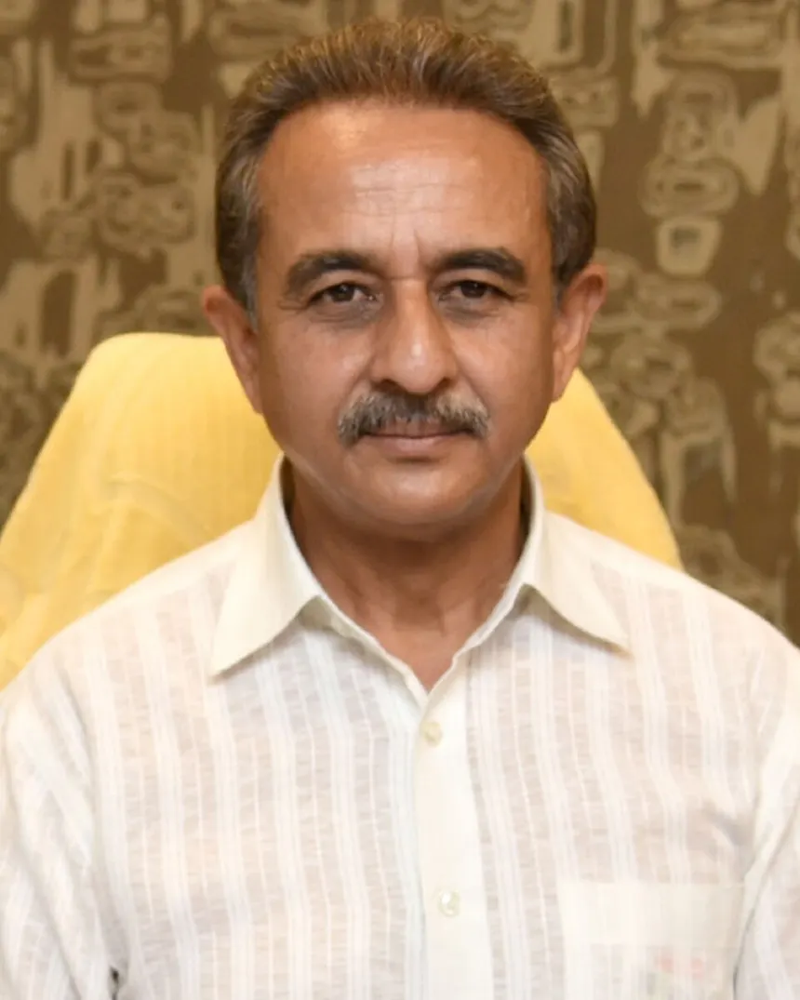

Our Leadership

Kirti Vardhan Singh
Director
Shri Kirti Vardhan Singh was sworn-in as Union Minister of State on 09 June 2024. He assumed charge as Minister of State for Environment, Forest & Climate Change and Minister of State for External Affairs on 11 June 2024. He has been elected for the 5th time as a Member of Parliament to the 18th Lok Sabha in 2024 from Gonda Constituency in Uttar Pradesh.
He was a Member of 12th Lok Sabha (1998-1999), 14th Lok Sabha (2004-2009), 16th Lok Sabha (2014-2019) and 17th Lok Sabha (2019-2024). He was a member of Standing Committee on Industry and Consultative Committee, Ministry of Defence (1998-99), Standing Committee on Science & Technology, Environment & Forests (2004-2009), Committee on Estimates (2014-2015), Standing Committee on Science & Technology, Environment & Forests and Consultative Committee, Ministry of Defence (2014-2019), Standing Committee on Chemicals and Fertilizers (2016-2018), Standing Committee on Commerce (2018-2019) and Standing Committee on Science & Technology, Environment & Forests and Climate Change (2019-2024).
Shri Kirti Vardhan Singh has worked at grassroots level for the empowerment of most deprived sections of society. He has played an instrumental role in the promotion of rural education. He has set up an Intermediate College for girls and a Post Graduate College for higher studies in Gonda.
In 1988, he played a key role in setting up a first of its kind, pilot project of cage culture of fish rearing under the aegis of Ford Foundation of India. He regularly holds workshops with local fishermen cooperatives to impart latest information on fish rearing and fish breeding techniques and also provides technical knowledge to farmers to set up their own fish breeding hatcheries.
He has a special interest in the protection of environment. He has actively engaged with the National Green Tribunal to curb ecologically harmful activities. He is currently working on a project to rejuvenate local lakes and has successfully fought for the cause of settlement of the Van Tangiya labour families in Uttar Pradesh.
Shri Kirti Vardhan Singh is widely travelled. His other interests include reading, photography, painting, archery, water sports, paragliding and aero sports. He has set up Avadh Aero Sports Society and established an air strip registered with Ministry of Civil Aviation, Government of India to encourage aero sports in the rural district of Gonda and provide air time experience to local youths on ultra light aircrafts.
Yogesh Pahari
CEO & Accountable Manager
Yogesh Pahari is the CEO of DAC Aviation Services Pvt. Ltd. and has more than 30 years of military and civil aviation experience. An ex-Indian Air Force personnel, he has established himself as a seasoned professional in the aviation industry, gaining decades of experience working with various national and international companies.
Upon completing his engagement with the Indian Air Force, he started his civil aviation career with India's renowned component MRO with a motto of learning from the ground up. During his civil aviation journey, he also gained hands-on experience with business jets and helicopters. To master complex aircraft MRO processes, he worked with one of the leading Indian aviation MROs, delivering his best to customers. Over 10 years of working with top aviation organizations, he trained himself in national and international regulatory compliances, aircraft management, operations, supply chain management, and commercials, developing into a strong techno-commercial leader.
He is a people's manager who always leads alongside his team. He is a firm believer that team members are the greatest assets of an organization and should be given top priority, as they always pay the company back with excellent results. He decisively advocates that if a team is happy, the customers will be happy, leading to a flourishing business.
Mr. Pahari's vision and commitment to excellence have propelled DAC Aviation to prominence in the aviation industry, where it continues to deliver reliable and efficient services.